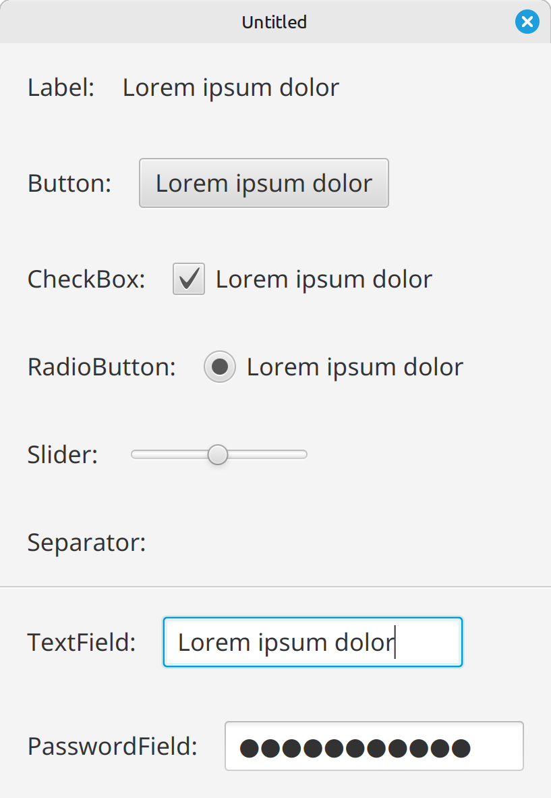
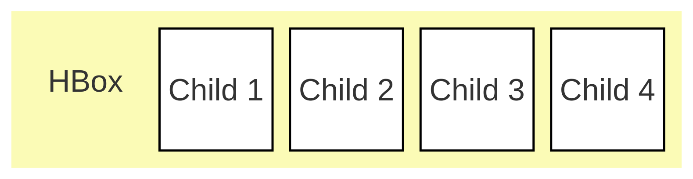
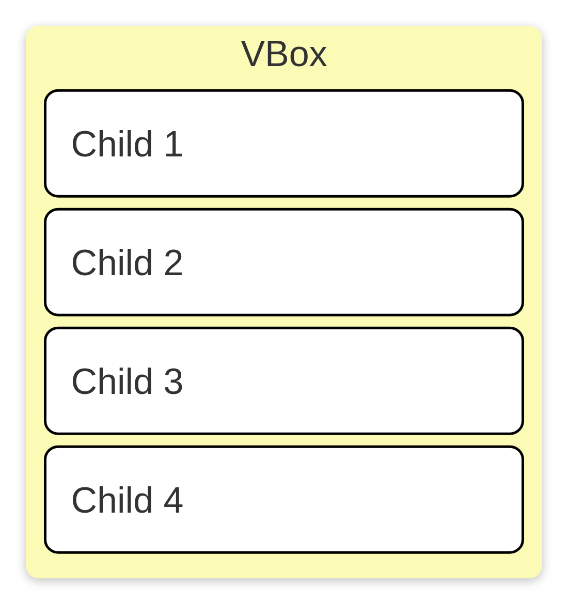
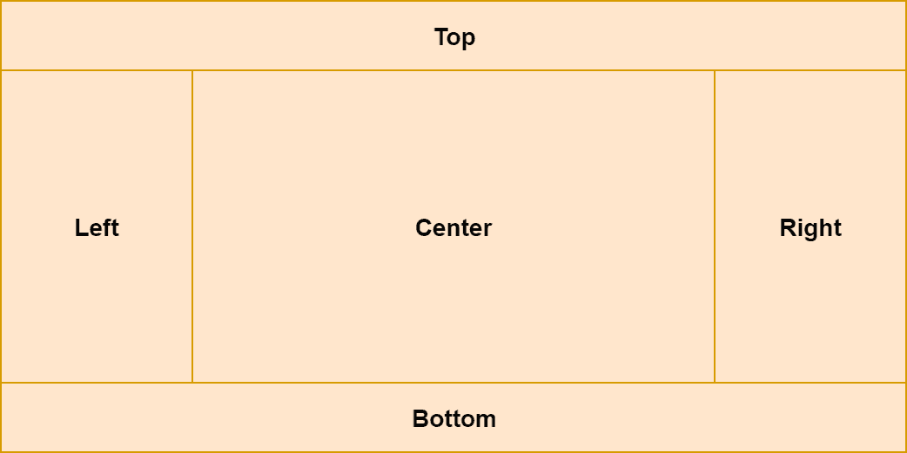
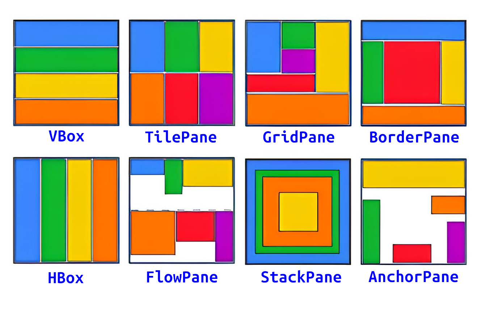
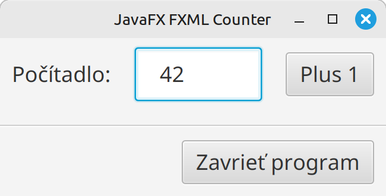
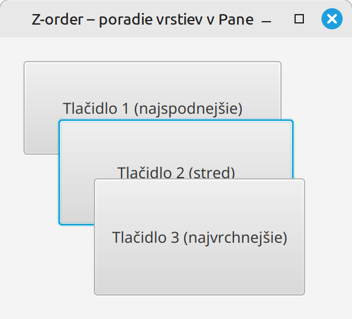

Teória 21: JavaFX - komponenty¶
Táto časť je venovaná vykresľovaniu do okna aplikácie. JavaFX umožňuje vykresľovanie rôznych typov prvkov. Dnes sa povenujem dvom hlavným kategóriam:
- Ovládacie prvky - Controls
- Komponenty pre rozmiestňovanie - Layout Containers
Do scény sa typicky umiestní jedna alebo viac komponent pre rozmiestňovanie, a do nich sa potom vložia ovládacie prvky, ktoré sa vykreslia do okna aplikácie.
Ovládacie prvky¶
Ovládacie prvky slúžia pre interakciu s používateľom a je ich veľké množstvo. Uvedieme si najpoužívanejšie:
Label- Textový popis bez interakcie.Button- Klikateľné tlačidlo.CheckBox- Prepínač (true / false).RadioButton- Prepínač v skupine (len jedna možnosť).Slider- Posuvník s hodnotou (horizontálny alebo vertikálny).Separator- Oddeľovač (horizontálny alebo vertikálny).TextField- Jednoriadkové textové pole. (TextArea- Viacriadkové textové pole)PasswordField- Textové pole so skrytým obsahom.

Ukážka ovládacích prvkov
Komponenty pre rozmiestňovanie¶
Tieto tzv. layout komponenty, alebo kontajnery, nám definujú, ako budú jednotlivé prvky v okne rozložené. Existuje desiatok druhov takýchto kontajnerov, my si ukážeme najpoužívanejšie z nich.
HBox (Horizontal Box)¶
HBox je definovaný v triede javafx.scene.layout.HBox
Tento kontajner rozmiestni prvky horizontálne v jednom riadku.

Ako príklad použitie HBoxu si môžeme uviesť náš príklad s počítadlom, kde sú 3 ovládacie prvky umiestnené do jedného riadku.

VBox (Vertical Box)¶
VBox je definovaný v triede javafx.scene.layout.VBox
VBox je kontajner, ktorý rozmiestni prvky vertikálne pod sebou

Nasledujúci príklad používa VBox na rozmiestnenie prvkov do riadkov.

BorderPane¶
BorderPane je definovaný v triede javafx.scene.layout.BorderPane
Ide o zložitejší kontajner, ktorý vytvára priestor pre hlavičku a pätu okna a taktiež umožňuje vložiť prvky na ľavý a pravý okraj.

HBox menu = new HBox(
new Button("Súbor"),
new Button("Upraviť"),
new Button("Pomoc")
);
BorderPane root = new BorderPane();
root.setTop(menu); // horná časť
root.setBottom(new Label("BOTTOM - pätička")); // spodná časť
root.setLeft(new Button("LEFT")); // ľavá časť
root.setRight(new Button("RIGHT")); // pravá časť
root.setCenter(new Button("CENTER - hlavný obsah")); // stred
Ostatné¶
Okrem týchto kontajnerov existujú aj iné:
GridPane- Tabuľkové rozloženie (riadky a stĺpce).StackPane- Prvky sú nad sebou (vrstvy).FlowPane- Tokové rozloženie – zalamuje prvky podľa šírky.AnchorPane- Ukotvenie prvkov k okrajom kontajnera.TilePane- Prvky majú rovnakú veľkosť v mriežke.Pane- Kontajner bez automatického rozloženia, grafické prvky musia mať uvedenú presnú polohu a veľkosť

Scene Graph¶
Všetky komponenty, ktoré chceme zobraziť v okne sa vkladajú do scény (objekt triedy Scene), ktorá sa potom pripojí na okno aplikácie (objekt triedy Stage). Komponenty sa do scény vkladajú tak, že z komponentov si urobíme stromovú štruktúru s jedným koreňovým komponentom. Do neho postupne vkladáme ďalšie a tak si vytvoríme celú scénu. Táto stromová štruktúra sa volá scene graph.
Ak máme hotový scene graph, do scény sa potom priamo vloží iba koreňový komponent. Všetky ostatné komponenty sú priamo alebo nepriamo vnorené v tomto koreňovom uzle.
Ako príklad si ukážeme scene graph pre naše počítadlo s menšou úpravou. Pridáme do neho ešte separátor a tlačidlo na zatvorenie aplikácie.

Takúto scénu vieme vytvoriť pomocou VBox a HBox komponentov. Výsledný strom komponentov je nasledovný:
flowchart TD
VBox --> HBox1[HBox]
VBox --> Separator
VBox --> HBox2[HBox]
HBox1 --> Label
HBox1 --> TextField
HBox1 --> Button1[Button]
HBox2 --> Button2[Button]// Hlavný kontajner
VBox root = new VBox(10);
// Horný riadok s počítadlom
HBox counterRow = new HBox(20);
Label label = new Label("Počítadlo:");
TextField counterField = new TextField("0");
Button btnPlus = new Button("Plus 1");
btnPlus.setOnAction(e -> incrementCounter());
counterRow.getChildren().addAll(label, counterField, btnPlus);
// Oddelovač
Separator separator = new Separator();
// Spodný riadok - tlačidlo Zavrieť
HBox bottomRow = new HBox();
bottomRow.setAlignment(Pos.CENTER_RIGHT); // detské komponenty posunúť doprava
Button btnClose = new Button("Zavrieť program");
btnClose.setOnAction(e -> primaryStage.close());
bottomRow.getChildren().add(btnClose);
// Všetko dáme dokopy
root.getChildren().addAll(counterRow, separator, bottomRow);
Scene scene = new Scene(root, 380, 220);
Z-order¶
Všetky dnes spomínané komponenty sú dvojrozmerné - 2D. Majú šírku a výšku a X,Y pozíciu na obrazovke. Niekedy sa však pri vykresľovaní stáva, že sa komponenty prekrývajú. V takýchto prípadoch je nutné vedieť, ktorý prvok má byť navrchu a ktorý pod ním.
Pojem Z-ordering znamená poradie vykresľovania grafických a ovládacích prvkov - teda ktorý prvok je „hore“ a ktorý „dole“, keď sa prekrývajú.
Počas vykresľovania na obrazovke štandardne používame 2 osy, X a Y. X nám udáva vzdialenosť od ľavého kraja a Y od kraja horného. Pozícia 0,0 je teda v ľavom hornom rohu. Pri Z orderingu máme akoby ďalšiu os, nazývanú Z, ktorá ide kolmo od obrazovky. Podľa hodnoty na osi Z vieme určiť, ktorý prvok má byť na vrchu.
V rámci JavaFX sa Z-ordering nepoužíva priamo, ale Z-order poradie sa určuje na základe pozície prvku v strome uzlov - scene graphu
- Ako prvý sa vykresľuje koreňový uzol a potom sa vykresľujú jeho deti.
- Deti sa vykresľujú v poradí, v akom sú do kontajnera umiestnené. To znamená, že ak by sa detské komponenty prekrývali, posledný komponent bude úplne navrchu.
Zmenu poradia Z-order vieme vykonať premiestnením komponentov v rámci scene graphu, či už na iné miesto v strome alebo na inú pozíciu v rámci zoznamu detských komponentov.
Nasledujúci príklad ukazuje použitie kontajnera s pevným rozložením a prekrytými komponentami.

Scene graph takéhoto programu by vyzeral nasledovne:
flowchart TD
Pane --> B1[Button]
Pane --> B2[Button]
Pane --> B3[Button]// Kontajner s pevným rozložením
Pane pane = new Pane();
// Tlačidlo 1 – najspodnejšie
Button btn1 = new Button("Tlačidlo 1 (najspodnejšie)");
btn1.setPrefSize(220, 80);
btn1.setLayoutX(20);
btn1.setLayoutY(20);
// Tlačidlo 2 – uprostred
Button btn2 = new Button("Tlačidlo 2 (stred)");
btn2.setPrefSize(200, 90);
btn2.setLayoutX(50);
btn2.setLayoutY(70);
// Tlačidlo 3 – najvrchnejšie
Button btn3 = new Button("Tlačidlo 3 (najvrchnejšie)");
btn3.setPrefSize(180, 100);
btn3.setLayoutX(80);
btn3.setLayoutY(120);
// Tu sa rozhodne, ktorý prvok bude navrchu
// Pridávame v poradí odspodu nahor
pane.getChildren().addAll(btn1, btn2, btn3);
Scene scene = new Scene(pane, 300, 240);
Zhrnutie teórie¶
V repozitári na adrese https://github.com/wagjo/opg-gui máte ukážku práce s triedami Scene, Stage a Application. Ide o triedy FxStageExampleApplication a FxStageExampleMain, pomocou ktorej viete aplikáciu spustiť.
- JavaFX komponenty
- Ovládacie prvky - Controls
- Komponenty pre rozmiestňovanie - Layout Containers
- Ovládacie prvky
- Ovládacie prvky slúžia pre interakciu s používateľom a je ich veľké množstvo. Uvedieme si najpoužívanejšie
-
Label- Textový popis bez interakcie. -
Button- Klikateľné tlačidlo. -
CheckBox- Prepínač (true / false). -
RadioButton- Prepínač v skupine (len jedna možnosť). -
Slider- Posuvník s hodnotou (horizontálny alebo vertikálny). -
Separator- Oddeľovač (horizontálny alebo vertikálny). -
TextField- Jednoriadkové textové pole. (TextArea - Viacriadkové textové pole) -
PasswordField- Textové pole so skrytým obsahom.
- Komponenty pre rozmiestňovanie
-
HBox- rozmiestni prvky horizontálne v jednom riadku. -
VBox- rozmiestni prvky horizontálne v jednom stĺpci pod sebou. -
BorderPane- vytvára priestor pre hlavičku a pätu okna a taktiež umožňuje vložiť prvky na ľavý a pravý okraj. -
GridPane- Tabuľkové rozloženie (riadky a stĺpce). -
StackPane- Prvky sú nad sebou (vrstvy). -
FlowPane- Tokové rozloženie – zalamuje prvky podľa šírky. -
AnchorPane- Ukotvenie prvkov k okrajom kontajnera. -
TilePane- Prvky majú rovnakú veľkosť v mriežke. -
Pane- Kontajner bez automatického rozloženia, grafické prvky musia mať uvedenú presnú polohu a veľkosť
-
- Scene Graph
- Všetky komponenty, ktoré chceme zobraziť v okne sa vkladajú do scény (objekt triedy Scene), ktorá sa potom pripojí na okno aplikácie (objekt triedy Stage).
- Komponenty sa do scény vkladajú tak, že z komponentov si urobíme stromovú štruktúru s jedným koreňovým komponentom.
- Do koreňového kontajnera postupne vkladáme ďalšie a tak si vytvoríme celú scénu. Táto stromová štruktúra sa volá scene graph.
- Ak máme hotový scene graph, do scény sa potom priamo vloží iba koreňový komponent. Všetky ostatné komponenty sú priamo alebo nepriamo vnorené v tomto koreňovom uzle.
- Z-order
- Z-ordering znamená poradie vykresľovania grafických a ovládacích prvkov - teda ktorý prvok je „hore“ a ktorý „dole“, keď sa prekrývajú.
- Počas vykresľovania na obrazovke štandardne používame 2 osy, X a Y. X nám udáva vzdialenosť od ľavého kraja a Y od kraja horného. Pozícia 0,0 je teda v ľavom hornom rohu.
- Pri Z orderingu máme akoby ďalšiu os, nazývanú Z, ktorá ide kolmo od obrazovky. Podľa hodnoty na osi Z vieme určiť, ktorý prvok má byť na vrchu.
- V rámci JavaFX sa Z-ordering nepoužíva priamo, ale Z-order poradie sa určuje na základe pozície prvku v strome uzlov - scene graphu
- Ako prvý sa vykresľuje koreňový uzol a potom sa vykresľujú jeho deti.
- Deti sa vykresľujú v poradí, v akom sú do kontajnera umiestnené. To znamená, že ak by sa detské komponenty prekrývali, posledný komponent bude úplne navrchu.
- Zmenu poradia Z-order vieme vykonať premiestnením komponentov v rámci scene graphu, či už na iné miesto v strome alebo na inú pozíciu v rámci zoznamu detských komponentov.
Poznámky do zošita
V zošite je potrebné mať napísané aspoň tieto poznámky:
JavaFX komponenty
1. Ovládacie prvky - Controls
2. Komponenty pre rozmiestňovanie - Layout Containers
Ovládacie prvky
Slúžia pre interakciu s používateľom
- Label - Textový popis bez interakcie.
- Button - Klikateľné tlačidlo.
- CheckBox - Prepínač (true / false).
- RadioButton - Prepínač v skupine (len jedna možnosť).
- Slider - Posuvník s hodnotou (horizontálny alebo vertikálny).
- Separator - Oddeľovač (horizontálny alebo vertikálny).
- TextField - Jednoriadkové textové pole. (TextArea - Viacriadkové textové pole)
- PasswordField - Textové pole so skrytým obsahom.
Komponenty pre rozmiestňovanie
HBox - rozmiestni prvky horizontálne v jednom riadku.
VBox - rozmiestni prvky horizontálne v jednom stĺpci pod sebou.
BorderPane - vytvára priestor pre hlavičku a pätu okna a taktiež umožňuje vložiť prvky na okraje.
GridPane - Tabuľkové rozloženie (riadky a stĺpce).
StackPane - Prvky sú nad sebou (vrstvy).
FlowPane - Tokové rozloženie – zalamuje prvky podľa šírky.
AnchorPane - Ukotvenie prvkov k okrajom kontajnera.
TilePane - Prvky majú rovnakú veľkosť v mriežke.
Pane - Kontajner bez automatického rozloženia, grafické prvky musia mať uvedenú polohu a veľkosť
Scene Graph
Komponenty sa vkladajú do scény (Scene), ktorá sa pripojí na okno aplikácie (Stage).
Z komponentov sa vytvorí stromová štruktúra s jedným koreňovým komponentom.
Táto stromová štruktúra sa volá scene graph.
Do scény sa potom priamo vloží iba koreňový komponent.
Ostatné komponenty sú priamo alebo nepriamo vnorené v tomto koreňovom uzle.
Z-order
Z-ordering znamená poradie vykresľovania grafických prvkov - čo je navrchu a čo naspodku
Štandardne používame 2 osy, X a Y. Pozícia 0,0 je v ľavom hornom rohu.
Prekrytie je určene treťou osou, Z, ktorá ide kolmo od obrazovky.
JavaFX určuje Z-order poradie na základe pozície prvku v strome uzlov - scene graphu
Ako prvý sa vykresľuje koreňový uzol a potom sa vykresľujú jeho deti.
Deti sa vykresľujú v poradí, v akom sú do kontajnera umiestnené.
Teda posledný komponent bude úplne navrchu.
Zmenu poradia vieme vykonať premiestnením komponentov v rámci scene graphu,
či už na iné miesto v strome alebo na inú pozíciu v rámci zoznamu detských komponentov.
Skúšanie a kontrola vedomostí
Na ďalšej hodine budeme kontrolovať nasledovné veci:
- Zapísané poznámky z hodiny vo vašom zošite
Okruhy otázok na test:
- Ako delíme JavaFX komponenty
- Základné ovládacie prvky
- Základné komponenty pre rozmiestňovanie
- Čo je scene graph, čo ho tvorí a ako sa vkladá do scény
- Čo je Z-order, ako JavaFX rozhoduje, ktorý komponent je navrchu
- Ako sa dá meniť prekrytie komponentov